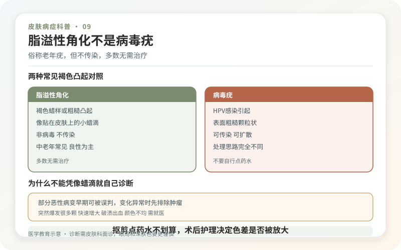
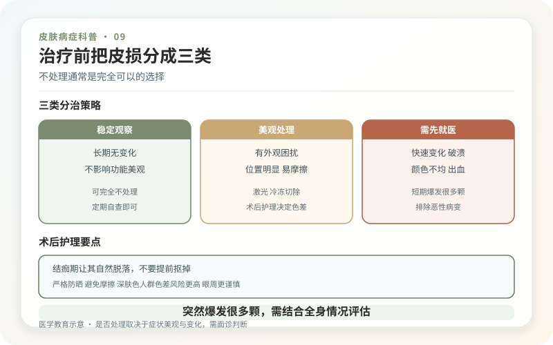

脂溢性角化是一种非常常见的良性表皮增生，常在中年以后逐渐增多。它可以是浅褐、深褐甚至接近黑色，表面光滑、蜡样、粗糙或疣状，像“贴”在皮肤上。俗称“老年疣”，但这个名字容易误导：它不是人乳头瘤病毒造成的疣，不会因为接触传染给家人。
它可长在头面、躯干和四肢，但一般不出现在掌跖。数量增加往往与年龄、遗传和可能的日晒因素有关，不是洗澡没搓净，也不是血液循环差。

为什么不能凭“像蜡滴”就自己诊断？
多数脂溢性角化有典型外观，皮肤科结合皮肤镜即可判断。但色素痣、光线性角化、基底细胞癌和黑色素瘤都可能模仿它；反过来，受摩擦发炎的脂溢性角化也可能突然红肿、结痂，看起来很吓人。
如果某一颗与其他明显不同，短期快速增大、颜色变杂、边缘不规则、持续出血或破溃，医生可能建议切除或取样做病理。病理的价值不是“顺便化验”，而是在显微镜下确认性质。先激光烧掉再问是什么，会失去完整组织证据。

不处理，通常完全可以
脂溢性角化本身多无害，不会自然变成皮肤癌，通常无需治疗。衣领、胸罩或剃须反复摩擦导致疼痛出血，影响视线、清洁，或外观确实困扰时，可以讨论去除。治疗是为了症状或审美，而不是“防癌排毒”。
医生可能选择冷冻、刮除、电干燥、削切、激光等，取决于厚度、部位、肤色和是否需要病理。术后可能红、结痂、暂时或持久色沉、色减，也可能留疤。去掉一颗不代表以后别处不再长，所谓“一次清除体质”没有医学依据。
眼周和深肤色，要更谨慎
深肤色人群眼周可出现许多细小的脂溢性角化样丘疹，常被称为黑色丘疹性皮病。数量多、位置精细，治疗后色素改变风险也更值得考虑。眼睑附近操作还要保护眼球，不能用家用点痣笔或美容院药水处理。
若只是少量、稳定、不碍事，观察往往比“全脸扫除”更理性。决定治疗前可以先处理一两个测试恢复，再决定是否扩大范围。
抠、剪、点药水为什么不划算？
自行抠剪容易出血感染，且基底仍可残留；腐蚀性点斑水的深度不可控，既可能去不干净，也可能造成凹疤。把突然发痒解释成“正在恶变”也不准确，摩擦、干燥和炎症更常见，但持续变化仍应就医。
日常保持温和清洁和防晒即可，不需要特制“去疣皂”。拍照记录可疑皮损的大小、颜色和表面变化，比每天摸它是否更厚更可靠。
记住一个判断顺序：先确认是什么，再决定要不要去，最后才选择怎么去。对于大多数脂溢性角化，不治疗并不会耽误健康；真正不该耽误的是那些长得不像同伴、持续变化的皮损。
做治疗前先把皮损分成三类
第一类是典型、稳定、无症状，只需观察；第二类是被衣物摩擦、反复发炎或确实影响外观，可择期处理；第三类是诊断不确定、快速变化、出血破溃，需要保留病理证据。把三类混在一次“全脸扫斑”中，容易为了效率牺牲安全。
多发皮损可用手机在身体示意图上编号，记录哪颗痒、哪颗出血、哪颗新出现。面诊时优先讨论异常者，而不是只挑最大最黑的一颗。治疗后也保留病理报告和位置照片，防止以后同部位变化无法追溯。
术后护理决定色差是否被放大
冷冻、刮除或电干燥后按医嘱清洁，保持创面不过度潮湿，也不要反复用酒精和碘伏刺激。结痂要自然脱落，白天做好遮挡和防晒。深肤色人群可能经历较长的色沉期，过早再次治疗会叠加炎症。
伤口红肿热痛加重、流脓、持续出血或超过预期不愈，应复诊。新皮暂时偏粉或偏白不一定是永久色减，需要等待稳定；但边界清楚的持久白斑也应让医生评估。
突然“爆发很多颗”怎样理解？
中老年皮损逐年增多很常见。若短期出现大量伴明显瘙痒、全身不适或其他异常，应先由医生确认是真正新发还是过去小皮损突然被注意到，并根据整体病史判断是否检查。网络常把这种现象直接等同肿瘤信号，证据并不足以让每位多发者恐慌；有伴随症状时认真评估即可。
把“先诊断、后处理”记住，往往能少走弯路，也能避免把医学筛查误当成单纯美容消费。